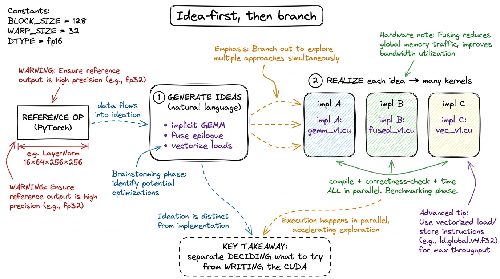
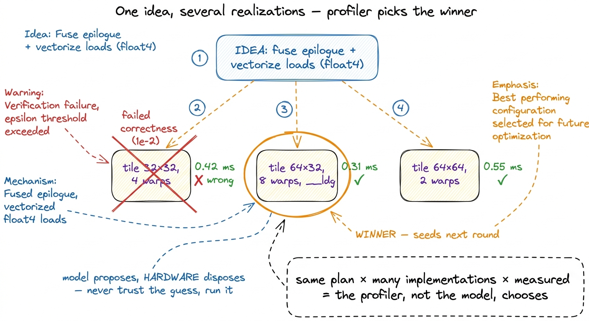
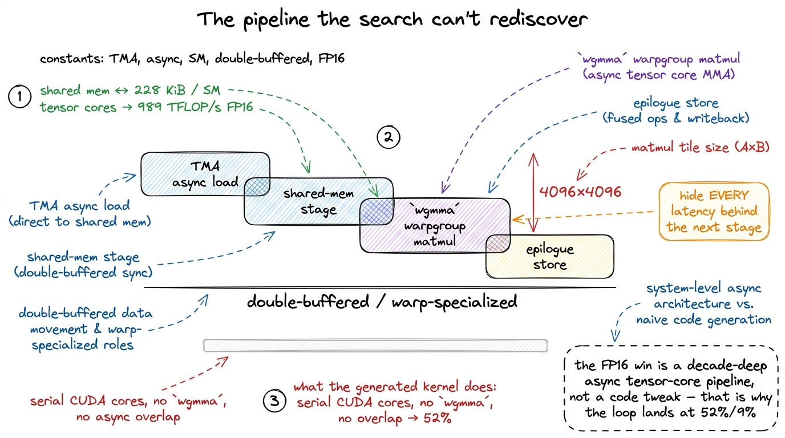
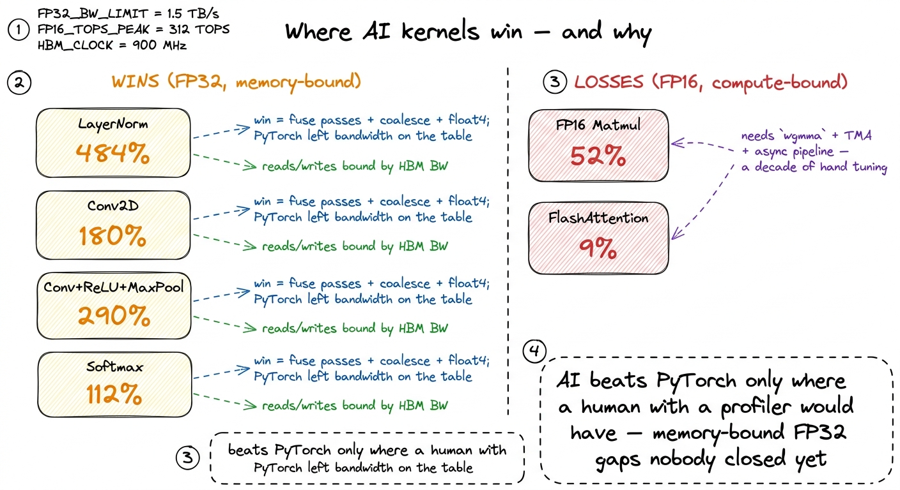

The CRFM experiments
Everything on this site so far has been a human climbing the GEMM ladder by hand — hypothesis, code, profile, number, repeat. That loop is the whole job, and it is slow. So the obvious question, once you have done it a few times, is: can a language model run the loop itself? In May 2025 Stanford's Center for Research on Foundation Models (CRFM) published a result that made a lot of kernel engineers sit up — a set of AI-generated CUDA kernels that, on several operators, beat PyTorch's own production kernels. This article is my worklog reading of that work: what they actually did, which numbers are real, and — the part everyone skips — exactly where it falls on its face.1 Source: "Surprisingly Fast AI-Generated Kernels We Didn't Mean to Publish (Yet)", CRFM, 2025-05-28. The title is doing some honest work: this was a byproduct of a synthetic-data pipeline, not a polished system, which is part of why I trust the negative results.
The headline is genuinely striking. On LayerNorm the generated kernel hit 484.4% of PyTorch — nearly five times faster. But the same method produced a FlashAttention kernel at 9% of PyTorch, more than ten times slower. Both numbers are true, and the gap between them is the entire lesson.
The old loop, and why it stalls
The naive way to point an LLM at kernel writing is the one everybody tries first: give it the reference op, ask for a fast CUDA version, run it, feed back the error or the timing, ask it to fix it. A sequential revision chain. It works for a few steps and then flatlines — the model gets attached to its first structural choice and spends every subsequent turn polishing a local minimum. It will happily shave a register off a kernel that needed a completely different tiling strategy.
CRFM's insight is to break the two things the model is bad at doing simultaneously — deciding what to try and writing correct CUDA — into separate stages.
Ideas in English first, code second
The first move is to generate optimization ideas in natural language, conditioned on the ideas already attempted, before writing any code. Not "here is a kernel, improve it," but "here are the strategies tried so far — propose new ones." The model produces English hypotheses like "convert the convolution into an implicit GEMM and reuse the matmul tiling," or "fuse the ReLU and the pooling into the epilogue so we never round-trip through HBM."
This is exactly the three-regimes reasoning a human does out loud, and forcing it into prose has a real effect: the search stops thrashing on syntax and starts reasoning about mechanism. It is the difference between mutating characters and mutating plans.

figure rendering · The two-stage loop: hypotheses in English, then many independent impleBranch wide, keep the best seeds
The second move is the one that turns a chatbot into a search algorithm. Each natural-language idea is realized into multiple independent implementations — the same plan, written several different ways — and every one of them is compiled, checked for correctness against the reference, and timed. In parallel. This is a population, not a chain.
Then the selection step: the highest-performing kernels become the seeds for the next round, alongside a maintained bank of known-good kernels. Bad branches die; good branches breed. It is evolutionary search where the mutation operator is "an LLM with a hypothesis" rather than a random bit-flip.2 They ran this with two models — OpenAI's o3 and Google's Gemini 2.5 Pro — generating both the ideas and the implementations. No fine-tuning; these are off-the-shelf frontier models used as the mutation-and-proposal engine.
They ran five rounds of this. The timing detail I find most telling: most of the winning kernels did not appear early. The majority emerged in round 4 or 5 — meaning the wide-then-select loop is doing something a single clever prompt cannot. The good ideas are compositions of earlier good ideas, and you only reach them by keeping a diverse population alive long enough to recombine.
The clearest example of that recombination: in a later Conv2D round, the search seeded itself with a GEMM kernel it had generated earlier, because the "convolution as implicit matmul" idea had surfaced in the English stage. The matmul work it had already done became raw material for the convolution. That is the kind of cross-pollination the seed bank exists to enable, and it is why the branching structure matters more than any individual prompt.

figure rendering · Winners arrive in the last two rounds because they are compositions ofThe numbers that are real
They evaluated on ten operators drawn from KernelBench level 1, with modified problem sizes, measuring throughput as a percentage of PyTorch's own kernel on the same hardware. Percentages above 100 mean faster than PyTorch. Here is where it genuinely wins, and these are the numbers worth quoting:
- LayerNorm (
16×64×256×256): 484.4% — the standout, nearly 5× PyTorch. - Conv2D (
100×3×224×224): 179.9% — 1.8× faster. - Softmax (
4096×65536): 111.8% — a modest but real 12% win. - Fused Conv2D + ReLU + MaxPool: 290.1% vs the reference, and still 189% against
torch.compile— the fusion win survives even when PyTorch is allowed to fuse too. - FP32 Matmul (
4096×4096): 101.3% — essentially matchingcuBLAS-backed PyTorch, which is already a serious result for generated code.
Take LayerNorm seriously for a second, because 484% sounds fake. It is not doing 5× less math — the FLOPs are fixed. It is winning on memory. LayerNorm is a textbook memory-bound op: it reads the tensor, computes a mean and variance, reads it again to normalize, and writes it out. The wins here are the classic ones a human would reach for — fuse the passes so the data is read once, keep the running statistics in registers, vectorize the loads with float4, and coalesce cleanly. PyTorch's default kernel leaves bandwidth on the table on this particular shape, and the search found it. That is not magic; it is the regime playbook executed by a machine that could try a hundred variants overnight.
The same story explains the fused Conv+ReLU+MaxPool result. The entire win is not round-tripping intermediate tensors through HBM between the three ops — exactly the fusion argument from the memory-bound regime. Beating torch.compile by 189% means the generated epilogue fusion was tighter than the compiler's, which is a legitimately impressive outcome for an unfine-tuned model.
The numbers that are humbling
Now the part the headline number buries. Two operators went badly:
- FP16 Matmul: 52% of PyTorch — roughly half speed.
- FP16 FlashAttention: 9% of PyTorch — more than 10× slower.
These are not rounding errors. They are the same method, the same five rounds, the same frontier models — producing kernels you would never ship. And the reason is the most important sentence in the whole write-up.
Why it wins where it wins
CRFM's own explanation is refreshingly blunt: FP32 is less common in modern ML and often less optimized on recent hardware than FP16 or BF16. The wins all cluster in FP32 and in memory-bound, fusion-friendly ops. The losses cluster exactly where the incumbent is a decade of hand-tuned, hardware-specialized engineering.
Think about what an FP16 matmul on an H100 actually requires to be fast. It has to feed the tensor cores through wgmma instructions, stage tiles through shared memory (up to 228 KiB per SM), hit 989 TFLOP/s of BF16/FP16 tensor throughput, and hide every latency behind a software pipeline — the async-copy, double-buffered, warp-specialized machinery that takes the GEMM ladder from 1.3% to 93.7% of cuBLAS.3 On Hopper the fast path is wgmma warpgroup matmul plus TMA async loads and thread-block clusters — sm_90a features that a general code model has seen almost no correct training examples of. The generated kernels mostly can't even reach the tensor cores, let alone pipeline them. A model generating CUDA source has effectively no chance of rediscovering that stack in five rounds against a library NVIDIA has tuned for fifteen years.

figure rendering · The compute-bound losses in one picture: production FP16 is an overlapwgmma+TMA pipeline; the model emits a flat, un-pipelined kernel and stalls. ||FlashAttention is worse still: it is a fused, IO-aware, online-softmax algorithm whose entire reason for existing is to never materialize the attention matrix in HBM. It is arguably the most heavily optimized single kernel in all of deep learning. Landing at 9% — while still, notably, an improvement over the sub-1% the naive attempts started at — tells you the search made real progress and was still nowhere close.4 The honest framing in the post is that they lifted FlashAttention "from <1%", not that 9% is good. A 9× improvement over a terrible baseline that is still 11× slower than production is both true and useless in a serving path.
So the rule that falls out is clean, and it matches everything else on this site: the AI wins exactly where a competent human with a profiler would have won, and against opponents who were not already trying. It closes the easy, memory-bound, FP32 gaps that PyTorch left open because nobody bothered. It cannot invent the wgmma pipeline that a compute-bound FP16 kernel demands, because that gap was already closed by people who spent years on it.

figure rendering · The whole result on one card: the wins (orange) are the unclaimed memoWhat I actually take from this
Two things, and they pull in opposite directions.
First, the optimistic one: the loop generalizes. Idea-in-English → branch wide → keep the best seeds → recombine over rounds is a real search procedure, and it recovered — automatically — most of the memory-bound optimizations this site teaches by hand. If you frame kernel writing as population search over hypotheses rather than a chat with a code assistant, an off-the-shelf model can climb a meaningful way up the ladder. That is a genuine shift in what "the tooling" can do.
Second, the sobering one: the ceiling is exactly where the human ceiling is hardest to reach. The frontier of kernel engineering — the FP16/BF16, tensor-core-saturating, wgmma-and-TMA-pipelined kernels that actually run production training and serving — is precisely the region where these methods collapse to 9%.5 This is also why I don't worry the discipline is about to be automated away. The 52% and 9% are on the easiest modern-precision ops to state. Ragged shapes, novel fused ops, and new hardware like Blackwell's tcgen05 and Tensor Memory are further out still. The scarce skill is not writing a coalesced FP32 elementwise kernel; a search loop can do that now. The scarce skill is the compute-bound tensor-core pipeline — which is exactly what the rest of this course spends its kernels teaching, one profiled step at a time.
The right reading of CRFM is not "AI writes kernels now." It is "AI writes the easy kernels now, which means the bar for a human kernel engineer just moved up to the hard ones." That is a good thing to know before you decide which kernels are worth your afternoon. Next in this section we take the same wide-branching idea and point it at a bottleneck the search can't solve alone, and watch where a human still has to step in.